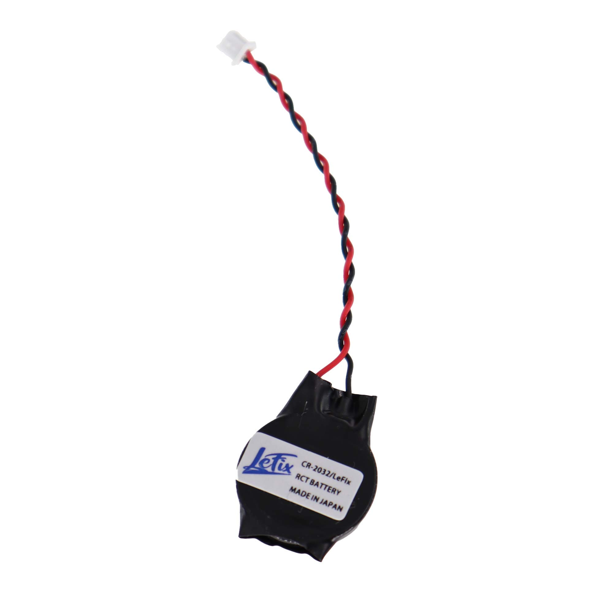

1.Motherboard
The system board is the main logic board in any laptop. All internal components are connected to the system board. This is one of the most expensive parts in a laptop.
2.Processor
A central processing unit (CPU) formerly also referred to as a central processor unit is the hardware within a computer that carries out the instructions of a computer by performing the basic arithmetical, logical, and input or output operations of the system.
3.Memory or RAM
Random access memory (RAM) is used as the working memory of a computer system. It stores input data, intermediate results, programs, and other information temporarily. It can be read and written. It is usually volatile, that is all data will be lost when the power is turned off. In most cases it is loaded again from hard disk.
4.Hard Disk Drive
The hard drive is the main storage of information in a laptop. All system files, personal files are stored inside the hard drive. Find the difference between SATA and IDE hard drives. Faster hard drive you have installed – faster data access you get. Types of Hard Disk 1. IDE Interface 2. SATA Interface
5.Heat Sink w/ Cooling Fan
In computers, heat sinks are used to cool central processing units or graphics processors.
.
6.Keyboard
Is a typewriter-style device, which uses an arrangement of buttons or keys, to act as mechanical levers or electronic switches. Typically has characters engraved or printed on the keys and each press of a key typically corresponds to a single written symbol.

7.LCD Inverter
An LCD (liquid-crystal display) inverter is a component in laptop computers that supplies the power to provide a backlight to the monitor, enabling the user to view what's on the screen. This component is commonly the culprit when the monitor goes out and can be moderately simple to replace.
8.LCD/LED Display Monitor
A liquid-crystal display (LCD) is a flat panel display, electronic visual display, or video display that uses the light modulating properties of liquid crystals. Liquid crystals do not emit light directly. LCDs are used in a wide range of applications including computer monitors, televisions, instrument panels, aircraft cockpit displays, and signage.

9.Optical Drives
An optical disc drive (ODD) is a disk drive that uses laser light or electromagnetic waves within or near the visible light spectrum as part of the process of reading or writing data to or from optical discs. Some drives can only read from discs, but recent drives are commonly both readers and recorders, also called burners or writers.
10.CMOS Battery (RTC)
The CMOS (Complementary Metal Oxide Semiconductor) battery provides power to the CMOS chip when the laptop is not powered on. The CMOS memory stores the date, time, and system setup parameters. Without the CMOS Battery, the CMOS would not be able to continuously keep track of the date and time while your computer is off.

11.Power Adapter
Also called an "AC adapter" or a "charger" if used to recharge a battery, it plugs into the wall and converts AC current to a single DC voltage in most cases. There are also adapters that output a different AC voltage. Laptops have both an external power adapter, also called a "power brick," and an internal power supply. If an external power adapter is not used with an electronic product such as a desktop computer, the DC current is created in a power supply inside the unit